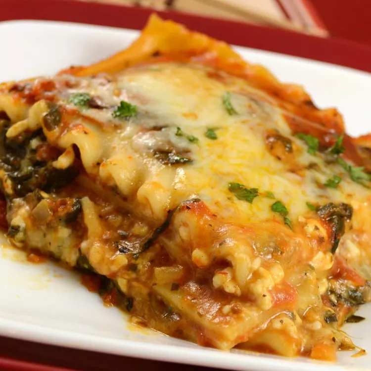

Lasagna

Vegetarian lasagna
A more healthy version of lasagna using spinach instead of beef
Ingredients
- Lasagna sheets
- Spinach
- Tomato sauce
- Bechamel sauce
Steps
- Preheat oven to 180C
- Heat tomato sauce in a pan
- Add spinach to sauce until it wilts
- Add pasta sheet to lasagna dish
- Add layer of spinach and tomato sauce
- Add layer of bechamel sauce
- Repeat steps 3-5 another 3 times
- Add final layer of pasta on top and cover with bechamel sauce
- Sprinkle grated cheddar on top
- Put dish on middle shelf of the oven and heat for 30 minutes